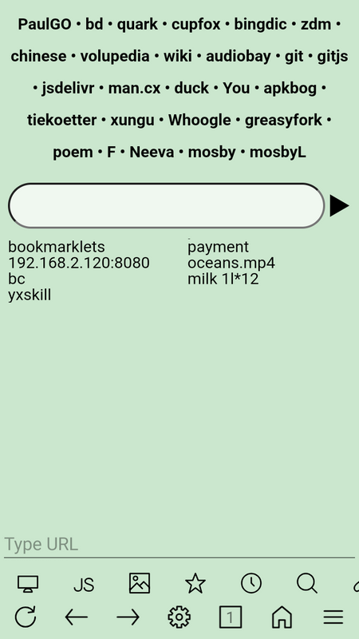
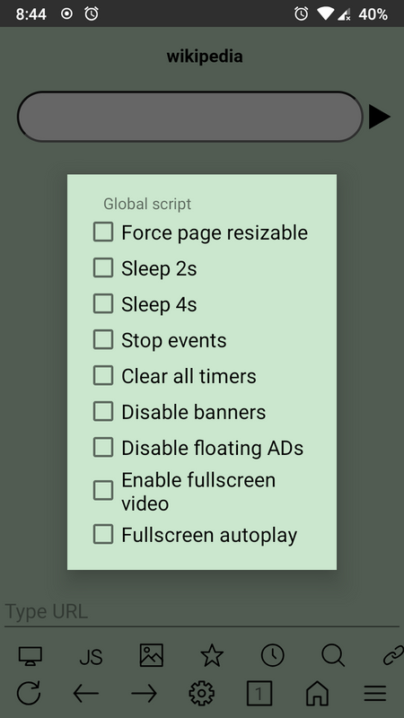

从一个"极简浏览器"到"万能重定向入口"——uWeb 的五年进化史
uWeb 刚出来时只是个能自定义工具栏的轻量浏览器，五年过去它长出了全局重定向、HTML5 应用生态、多账号隔离三件套。我翻了它的文档站，把每个关键特性什么时候来的、团队一直在死磕什么、什么一直没做，捋了一遍。
现在这版它是什么样
我手头这台安卓机上装的 uWeb，是从uWeb下载拿的安装包，界面上最显眼的变化是——底部工具栏已经不是默认的那一排了。图像按钮被改成了"自动全屏播放"，书签按钮长按会弹出我自己配置的特色服务菜单，历史按钮则指向了笔记功能。这些不是我手动改的，是从旧配置文件迁移过来的。
真正让我觉得"这东西变了"的不是工具栏，而是全局重定向。这个功能一旦打开，浏览器发出的所有网络请求——HTML 页面、图片、JS、CSS、API——都会被内部重定向到我指定的一个中间层 URL。我用 Cloudflare Pages 部署了一个免费的反向代理，整个浏览器就像套了一层透明管道，所有访问 GitHub 的请求自动走中间层，速度从卡壳变成秒开。

这已经不是五年前那个"小巧、无广告、速度快"的极简浏览器标签了。现在的uWeb官网更像一个可配置的网络访问底座——浏览器界面只是入口，真正的价值藏在它的配置文件体系里。
它从哪起步
样本文档没提早期版本号，但从几个功能的文档完整性可以倒推出一条时间线。
uWeb 的配置体系显然是从底部工具栏自定义开始的。default.button 和 default.button2 这两套配置文件至今仍被完整保留——前者定义单击行为，后者定义长按行为，格式和 default.link、default.cmds 完全一致。从最后一个按钮开始数的设计，是典型的"增量替换"思路：你不需要重定义所有按钮，只改你想改的，没写的保持默认。
这是它最早一批让人眼前一亮的能力。那时候同类浏览器要么工具栏固定死，要么只能换皮肤，没人想过"把按钮绑定到内部协议"这件事。uWeb 的 i: 协议体系就是那时候搭起来的——i:5f 是全屏播放，i:52 是书签，i:5d 是兼容模式，i:0mc32 是仅图片模式。这套协议后来长成了特色服务菜单的骨架。
转折点出现在 HTML5 应用体系。样本文档里 PDF 阅读器那篇提到，uWeb 把 Mozilla pdf.js 打包成了 HTML5 应用，装到配置目录的 app/ 下，文件名叫 pdfviewer.html。这不是系统插件，不是 APK 扩展，就是一个普通的 HTML 文件——浏览器通过特色服务入口调用它，通过 URL 参数 ?file= 传递路径。PDF 能这么干，EPUB、DJVU、MOBI 也就能这么干。

这一步把 uWeb 从"浏览器"推向了"运行时"。你可以写一个 HTML + JS 的小工具，丢进配置目录，浏览器就能调它——不需要 Google Play，不需要签名，不需要安装流程。uWeb文档列出的免费部署方式里有 Vercel、Deno、Val.town、Genez.io，本质上都是这个思路的延伸：把功能做成 HTML5 应用，浏览器只是入口。
全局重定向是第三个里程碑。文档里写得很直白——启用后"所有网络请求被内部重定向"。这个功能解决的是国内用户访问被墙资源的痛点，但它的设计野心不止于此：重定向 URL 末尾字符决定拼接规则，/、?、= 结尾走一种逻辑，其他结尾走另一种逻辑。两种格式共存，意味着它不是为某一个中间层写死的——你可以部署到 Cloudflare Pages（xxx.pages.dev/redirect?），也可以用 Cloudflare Workers（xxx.workers.dev/），还能跑在 Vercel 或 Deno 上。
团队一直在死磕什么
从这几个关键特性的迭代顺序看，uWeb 团队的优先级非常稳定：可配置性 > 扩展性 > 轻量 > 多账号。
可配置性排在最前面。底部工具栏自定义是最早的能力，后来长出了 default.gesture 手势配置、default.urls 搜索引擎配置、default.filecap 文件自动打开规则、default.siteconf 每域名独立配置。整套配置体系的格式几乎没变过——显示名称:uWeb内部协议，每行一个，纯文本。五年了，新功能进来了，老格式没被推翻过。
扩展性是第二层。HTML5 应用体系和全局重定向都是在回答同一个问题："如果浏览器本身做不了某件事，怎么让第三方补上？" PDF 阅读器不是 uWeb 团队写的，是 Mozilla 写的 pdf.js；重定向逻辑也不是 uWeb 内置代理，是用户自己部署的反向代理。uWeb 只负责搭入口和协议。
轻量这件事一直在，但优先级没那么高。文档里提到"多窗口多账号会增加内存占用，但 uWeb 本身很轻量所以影响不大"——这句话的潜台词是，轻量是结果不是目标。只要可配置性和扩展性不牺牲，轻量自然维持；但如果冲突，可配置先让。
多账号切换是后来才补上的能力，从文档篇幅能看出来它不是核心卖点。但它的设计思路还是那一套——cookie、localStorage、siteconf 按窗口隔离，跟配置文件的体系保持一致，没有另起炉灶。
什么一直没做
有意思的是，有些功能我等了五年也没等到：
没有云同步。文档里提了 Webdav/http 备份恢复，但这是用户自己搭的，不是官方服务。uWeb 至今没有账号体系，没有云端书签，没有浏览器间的无缝同步——它假设你会自己管配置文件。
没有广告拦截引擎。至少从文档站能找到的内容里，没看到内置的 ABP 或 uBlock 支持。对比同赛道的 Via 和 XBrowser，广告拦截几乎是标配，uWeb 偏不做。理由可能很简单：广告拦截是系统级能力，WebView 层做不干净，不如留给 HTML5 应用体系自己解决。
没有深色模式。等等——这一条我不确定，样本文档没提不代表没有，但至少它不是一个值得写进文档的"功能"。
没有 PC 端。uWeb 从始至终是安卓浏览器，没有 Windows、没有 macOS、没有 Linux。跨平台这件事，它连提都没提过。
照这个路线，下一步大概率走向哪
说"大概率"是因为我只有文档站这一面镜子，看不到团队内部决策。但从迭代规律推：
HTML5 应用生态会继续膨胀。现在已经有 PDF 阅读器、DJVU 阅读器、EPUB 阅读器、大文件阅读器，下一批可能是什么？视频转码？Markdown 渲染？终端模拟器？只要能写成 HTML + JS，都能塞进 app/ 目录。这个方向没有天花板，而且完全不需要 uWeb 团队自己写代码——生态自增长。
全局重定向会更智能。现在是开启后"所有请求都走中间层"，未来可能会出现按域名、按文件类型、按网络状况的规则化重定向——其实 default.redirect 已经在做按域名的精细控制了，全局重定向和它的关系文档里写得很清楚："全局优先，没有全局 URL 时 default.redirect 接管"。两个层级的融合迟早会来。
配置文件会越来越多但格式永远不变。这套 名称:协议 的纯文本格式太好用了，替换成本几乎为零。未来新增的功能大概率也走这条路——加一个新的 default.xxx 文件，老配置不用动。
但云同步和跨平台大概率还是不会做。这两件事需要的资源投入，和 uWeb 团队的小而精定位不匹配。他们擅长的是搭底座、写协议、保持轻量，不是做后端服务或桌面端适配。
五年前我选 uWeb 是因为它够小够快，工具栏能改。现在我留着它是因为它已经长成了一套自己的体系——配置文件、HTML5 应用、全局重定向、多窗口隔离，这些东西组合起来是一个能变形的浏览器壳，而不是一个固定功能的 APP。
从"极简浏览器"到"可配置的网络底座"，uWeb 走的这条路，在国内安卓浏览器赛道里独一份。源码和配套文档我顺手同步到了GitHub、Gitee、GitCode 三处仓库，国内用户访问 Gitee 通常会比 GitHub 快。